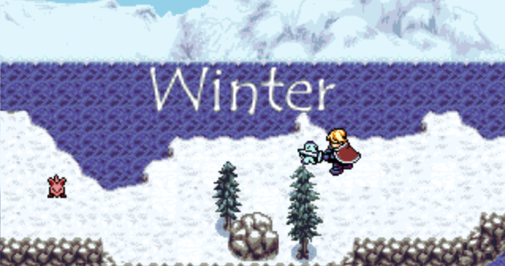

Story Overview
Winter is a simple game about a nameless man who trying make his way home, but is forced to travel through dangerous mountains full of creatures and magic. Will he make his way to the other side?
History
This game was originally created for a game jam (or compo as we called it) all the way back in 2003 using the ika game engine. It was built in about 3 weeks by a small but talented team. My main role then was with content creation, helping to create many of the maps that are in the game. The game was very ambitious - probably too much for the timeframe, and though it did have an ending, it still felt a bit unfinished. And so I took it upon myself to finally complete the game - filling in content that was incomplete, and adding in modern quality of life features - damage indicators, an automap, ability to set controls, implementing an additional skill and a bit more gameplay balance. However one thing I couldn't do was to increase the amount of enemies, so I apologize in advance for the lack of variety! But hopefully you will still enjoy the game. You can expect about 2 hours of gameplay, depending on your skill level and exploration.
Controls
The game supports both keyboard and gamepad controls. However, as its gamepad support is very old it may not work on newer controllers. The controls can be configured in game, but here are the defaults for keyboard:
- Arrow Keys
- Move the player, move the cursor in menus, et cetera.
- Escape
- Opens the subscreen menu.
- Space bar
- Attack with your sword.
- Tab
- Open Automap
- Z, X, C, V
- Use various skills that you will acquire over the course of your journey.
Things to Look out For
- Runes
- There are various runes you will find. Some increase your stats for defense, attack, and magic power. Others will give you permanent magic skills. These consume MP when used, and can be open up new areas to explore.
- TNT
- Some areas will be blocked off by boulders. These can be destroyed by TNT.
- Tents
- The mountains have tents scattered around - use them to save your game and heal!
Tips
- Kill enemies to gain EXP and level up to increase your MP, HP, and stats.
- You will also acquire additional skills at certain points.
Credits
- Management, Main Program
- Andy Friesen
- Maps
- Francis Brazeau (Hatchet)
- Troy Potts (Thrasher)
- Corey Annis
- Andy Friesen
- Artwork
- Corey Annis
- Music
- 'Winter' by David Churchill (infey)
- 'Existing' by Mick Rippon
- 'Competative' by Disturbed
- 'Boss' by Troupe Gammage
- 'Resurrection' by RS3
- 'Lampoons Haunting' by PsySal
- Original Script
- Ian Bolinger (Ear)
- Remastered Edition - Additional Code
- Francis Brazeau (Hatchet)
- Remastered Edition - Additional Artwork
- Daniel Harris (Hyptosis)
- Additional Sound
- SoundBible.com
- Freesound.org
- Playtesting
- Adam Boudreau
- Alex Hartshorn
- Carlos Petersen
- Special Thanks
- Jeff Brooks (jeffgamedev)
- DoctorGamester
- Troy Potts (Thrasher)
- Everyone on the Breadbros Discord!